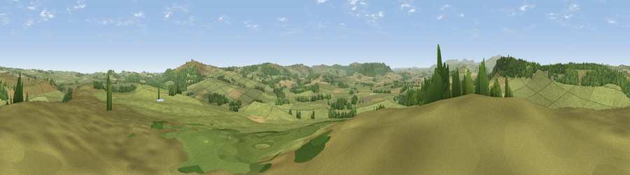

Viewpoint near Bolton
#22947 in England · top 65% of its area beats it · near BoltonThe view, rendered

A 360° render of this exact spot computed from the terrain model, tree cover and land cover — summer colours, afternoon light, calibrated against photographs of famous viewpoints. Real trees, hedges and buildings will differ in detail.
The panorama
Grey silhouette: terrain skyline in each direction (720 bearings, Earth curvature and refraction included). Dashed green: skyline with trees (+15 m) and buildings (+8 m) as obstacles. Blue strip: how far the ground is visible on each bearing.
Where the view opens
Wedge length = distance to the farthest visible ground on that bearing (vegetation-aware). Rings at 10, 25 and 50 km.
What fills the view
75% grassland · 16% woodland · 9% cropland
Angular shares of the visible panorama (visual magnitude), not map area. Landscape diversity 0.32 (0–1 Shannon).
Key numbers
More beautiful places nearby
The staircase of upgrades: each row has a higher view potential than everything closer. Driving times are estimates from straight-line distance, calibrated against real road routing — check an actual route before setting out.
| Place | Direction | Drive | Score |
|---|---|---|---|
| Viewpoint near Glanton | WNW · 2 km | ~6 min | 82.9 |
| Viewpoint near Eglingham | NNW · 7 km | ~15 min | 83.8 |
| Viewpoint near Chillingham | NNW · 11 km | ~20 min | 88.1 |
| Viewpoint near Easington | SSE · 114 km | ~139 min | 90.2 |
| The Knoll | S · 530 km | ~480 min | 91.0 |
55.43080, -1.82813 · source: screening · position refined by local search. Computed location — check access rights before visiting.